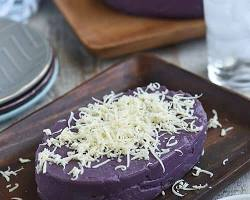

INGREDIENTS
- 1 kg (2.2 lbs) ube, peeled and roughly chopped
- 1 cup evaporated milk
- 1 cup coconut milk
- 1 (14 oz) can condensed milk
- 1/2 cup white sugar
- 1/4 teaspoon sea salt
- 1 teaspoon vanilla extract
- 1 tablespoon butter, unsalted (optional)
- 1-2 teaspoons ube extract (optional)
|

|
PROCEDURE
- Cook the ube: Steam or boil the chopped ube in water until tender and easily pierced with a fork (about 30-40 minutes). Drain and cool slightly.
- Mash the ube: While still warm, mash the ube with a fork or potato masher until smooth and free of lumps. You can also use a food processor for a finer texture.
- Combine ingredients: In a large pot or Dutch oven, combine the mashed ube, evaporated milk, coconut milk, condensed milk, sugar, salt, and vanilla extract.
- Cook the halaya: Over medium heat, stir continuously until the sugar dissolves and the mixture becomes thick and creamy. This can take 30-40 minutes, stirring frequently to prevent burning and sticking.
- Add optional ingredients: If desired, add the butter and ube extract for additional flavor and richness. Continue cooking for another 5-10 minutes.
- Test for consistency: The halaya is done when it reaches a spreadable consistency and pulls away from the sides of the pot when stirred. You can also drop a small amount onto a plate and tilt it. If it holds its shape without spreading, it's ready.
- Cool and serve: Transfer the halaya to a container and let it cool completely. Once cool, cover and refrigerate for at least 2-3 hours to allow the flavors to develop and the texture to set further.
- Enjoy!: Serve the ube halaya chilled, spread on bread or crackers, used as a filling for pastries, or simply enjoyed on its own.
|